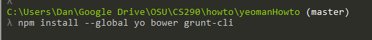
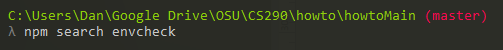
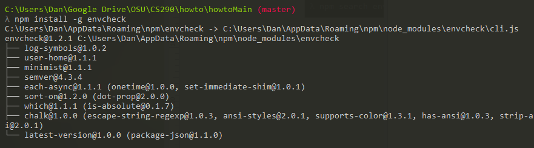
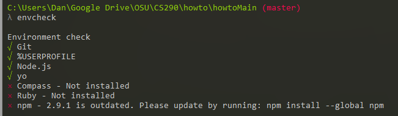
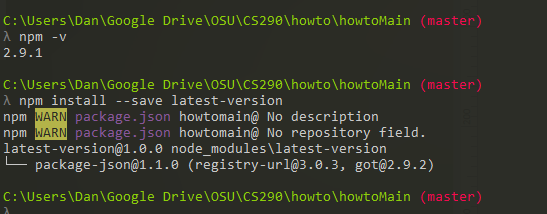
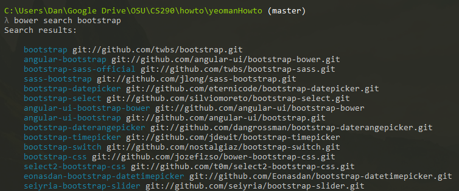

Installation
Let's install them!
In order to use yo, grunt, and bow, we need to first download them. With npm safely installed, we can go ahead and handle this. Open comand line and type
npm install --global yo bower grunt-cli
Let’s break that down to understand what you’re putting into the command line.
npm
Npm is node.js packet manager. It allows you to connect and download various packages and applications. The next confusing part is
--global
If this is not typed, then any new program will be installed into your current local directory. As a result, you will not be able to run yo as a command as it's not recognized by your entire system. Think js or c++ and scope. In the future, you can also simple write "--g". Following this you have
yo bower grunt-cli
.These are the specific programs we’ll be needed to actually make yeoman work.
Now, it is possible to simply install all 3 separate such as
npm install --global yo npm install --global bower npm install --global grunt-cli
However for today’s example, we’re doing it as one line.
Let's continute to explore ndm. Ndm allows us to effortless add new libraries to our environment, so lets do that now. First, we need to search for what we’re looking to install. Let’s practice with installing envcheck. Envcheck is a simple library that just checks if your Yeoman environment is healthy and up to date. If you’re missing a basic building block for all potential projects, it will tell you. Otherwise, it doesn’t change anything.
We’ll install it by typing
npm install –g envcheck
Now lets run it:
This led me to test my current npm version and sure enough, it was correct in that mine was out of date. However, the command
npm install –global npm
Did not work properly. The correct way to update npm to the most recent version is
npm install –save latest-version
The difference between –global and –save is that save not only installs it, but also update your package.json file with up to date information.
Finally, let’s revisit Bower. In order to build a modern website, it’s necessary to have modern tools. For your first few projects, you’ll need some basic libraries. For fun, lets run
bower search bootstrap
As you can see, there’s a lot here. Bower combs through github for compatible projects. For us, let’s just grab bootstrap and generator-angular. Install these via typing
bower install bootstrap
bower install generator-angular
With this finished, it's time to move on actually running Yeoman.
Part 3: Creating the Page